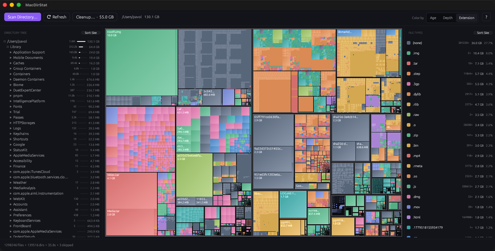

A free, open-source treemap that shows what's eating your disk on macOS — and trashes the regenerable junk in two clicks.

Every rectangle is a file, its area is its size — the big stuff is literally the big stuff on screen.
Size, name, items, or most-recent. Each folder shows its size, a percent bar, and item count.
Bytes, percentage, and file count per extension. Click a row to dim everything else.
Finds regenerable junk — DerivedData, node_modules, target/, caches — and trashes it in one pass.
Scan a volume root and it adds free space and hidden/skipped blocks, so the map covers the whole disk.
Scans on launch, no welcome screen. Protected paths are filtered up front, so no wall of permission prompts.
Homebrew (recommended):
brew install --cask chartres/mac-dir-stat/mac-dir-stat
Or grab the latest .dmg from
Releases,
open it, and drag MacDirStat into Applications. It's signed and notarized, so it
opens normally on first launch — no Gatekeeper workaround.
| MacDirStat | DaisyDisk | GrandPerspective | WinDirStat | |
|---|---|---|---|---|
| Platform | macOS | macOS | macOS | Windows |
| Price | Free | Paid | Free | Free |
| Open source | Yes (MIT) | No | Yes (GPL) | Yes |
| Visualization | Treemap | Sunburst | Treemap | Treemap |
| Folder + file-type lists | Yes | No | No | Yes |
| One-click junk cleanup | Yes | No | No | No |
If you loved WinDirStat on Windows and want the same thing on a Mac — free and open-source — that's what this is.